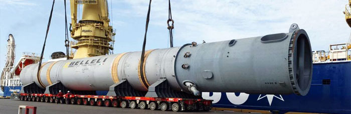
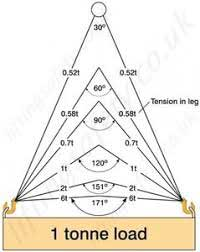
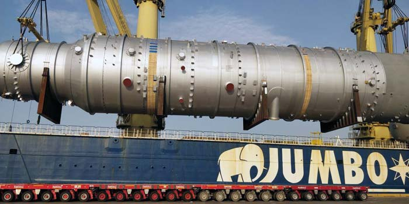
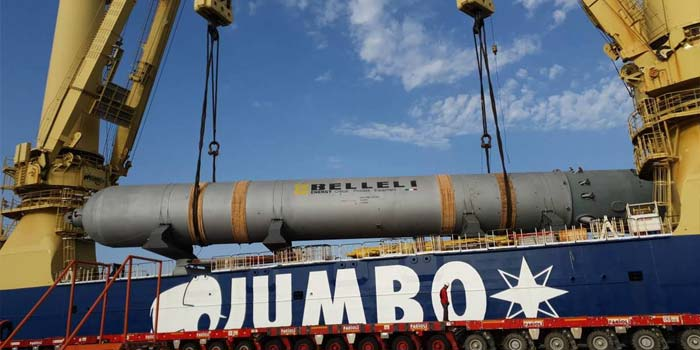

Tandem crane operation for lifting Cargo Weighing 770 M tons x 60m length under our Marine Warranty Surveyor Observation.
Heavy lift operations are one of the critical operations that needs the combination of knowledge and experience. The most primary and basic information comes in the mind when any one talks about heavy lifting task is the weight of the lifting object. How much weight to lift? Which is the primary information needed to initiate the planning. Other contributing factors for making a lifting plan includes but not limited to Dimensions, Center of Gravity (CoG), Lifting Point etc. These informations were used to develop the lifting plan, decide on the lifting crane specification and numbers, lifting gears becomes the most important element in the lifting operation. For a Marine Warranty Surveyor or the Supercargo main challenge comes for the availability of the lifting gears. Weather the Working Load Limit (WLL) of the lifting sling is sufficient to lift the cargo.
Often stevedore and foreman have the thumb rule for using the 100t WLL sling for 100 tons cargo or they will use 200t sling combination for lifting 100 tons cargo. Thumb rule for them becomes either match the WLL of the lifting sling with the weight of cargo or double the WLL for the lifting sling. Doubling the WLL for lifting sling may looks as a safer option and more conservative approach. However, it is not practical when the cargo weights more than 100 tons and also the technical approach for finding the correct WLL sling is on the fact that how the lifting is going to be.
Is it a straight sling lift or inclined sling lift?
Lifting through the lifting lug on the cargo or lifting a basket
lift.
Center of gravity or say load distribution on the lifting slings.
It is therefore become important to prepare the lifting plan, decide
the lifting slings and get the review of the MWS surveyor on the
lifting plan in order to take practically experience persons view
on the lifting plan and the due diligence for the safety of the
cargo.

An example for the lifting sling inclination factor is illustrated in image 1. Tension in the lifting sling is high when the sling inclination with the vertical axis is high and vice versa. During the single hook lifting operation it impossible to keep the sling straight. To determine the tension in the sling it become important to find the angle / inclination of the sling which depends on the length of the sling, distance between the lifting point and the center of gravity of the cargo.

Discharging of 1200 M tons x 48m length Pressure Vessel under Observation of our Marine Warranty Surveyor.

Lifting calculation was then also includes the safety factors based on the dynamic accelerations, yaw effect, skew load factor. We at Constellation Marine Services use the class standard guideline from DNV-GL for lifting operations and below are the few pictures from the heavy lift operation supervised by our Marine Warranty Surveyor / Master Mariners.
We constellation marine services have the experience marine warranty surveyor and team of engineers to complete the combination of technical knowledge and field experience for successful completion of the task.